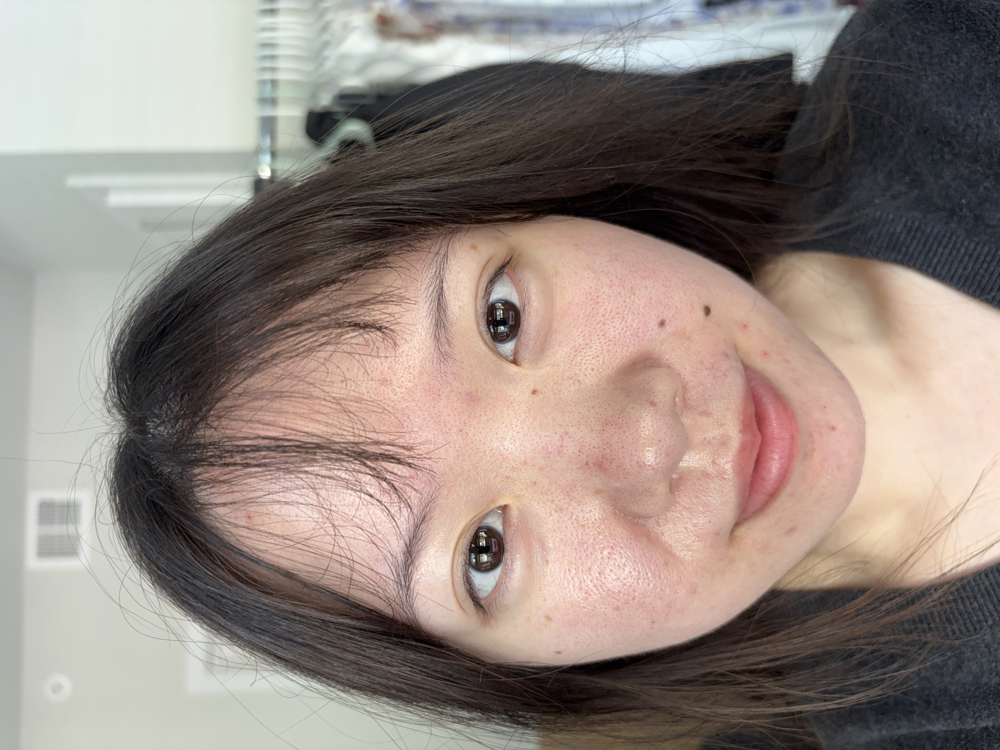
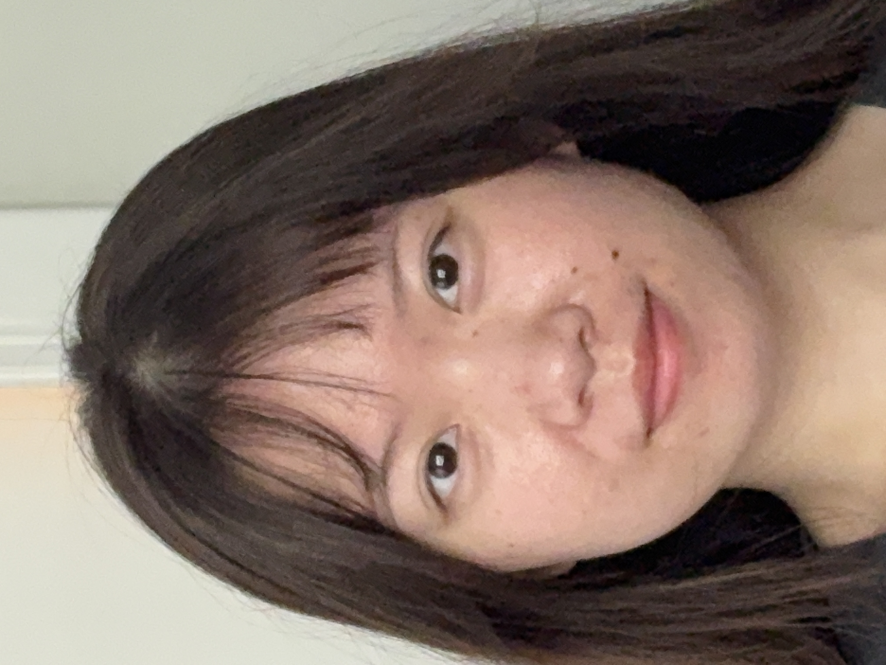
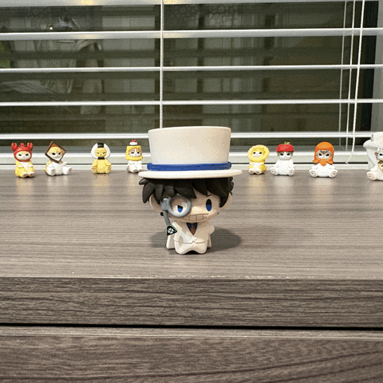

This project compares some of the visual effects of zoom as opposed to physical distance from the scene in photography.
Part 1: Selfies

close up

zoomed in
In the first photo, the camera is close to the face, and since closer objects appear larger, central features like nose are widened/stretched while others lie ears appear smaller. This effect is less prominent when the camera is held farther away, as the difference in distance from camera to nose and camera to ears is small enough to be negligiable. This is not true for a camera close to the face.
Part 2: Architectural Perspective Compression
close up
zoomed in
Similar to the previous part, the difference in distance between the close and far end of the building is more important when the camera is close to the building. When far from the building, both ends can be considered about equally far, so the entire building shrinks together.
Part 3: The Dolly Zoom

dolly zoom, feat. Kaito Kid
Note how the tiny cat figurines seem to be approaching Kaito Kid in the center. They reach a relatively similar depth in the scene as the camera backs away.
Credit goes to Allena Olgvie for the prettiness of this page, who originally used this style on a different group project we did